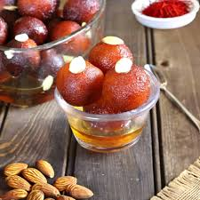
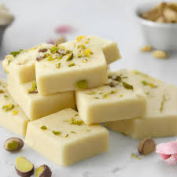
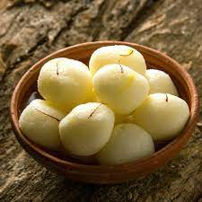

Gulab Jamun
Ingredients:-
- 2 cups sugar
- 1 cup water
- 4-5 green cardamom pods, crushed
- A few strands of saffron (optional)
- 1 teaspoon rose waterr
Recipe:-
- Making the Sugar Syrup (Chashni)
- Preparing the Gulab Jamun Dough
- Shaping and Frying
- Soaking in Sugar Syrup
- Serving

Bharfi Mithai
Ingredients:-
- 2 cups khoya (mava), crumbled or grated
- 1 cup powdered sugar (adjust according to taste)
- ¼ cup ghee (clarified butter)
- ¼ teaspoon cardamom powder
- Chopped nuts (almonds, pistachios) for garnishin
Recipe:-
- Preparing the Mava (Khoya) Mixture
- Adding Flavors
- Cooking and Setting
- Shaping and Garnishing
- Cutting and Serving

Bharfi Mithai
Ingredients:-
- Sugar Syrup
- 1 liter of full-fat milk
- 1 tablespoon lemon juice or vinegar
- 1/4 teaspoon cardamom powder
- 1 teaspoon semolina (suji) or all-purpose flour (maida)
Recipe:-
- Preparing the Chhena (Cottage Cheese)
- Straining the Chhena
- Kneading the Chhena
- Shaping the Rasgulla
- Making the Sugar Syrup
- Cooking the Rasgulla
- Cooling and Soaking
- Final Touch
